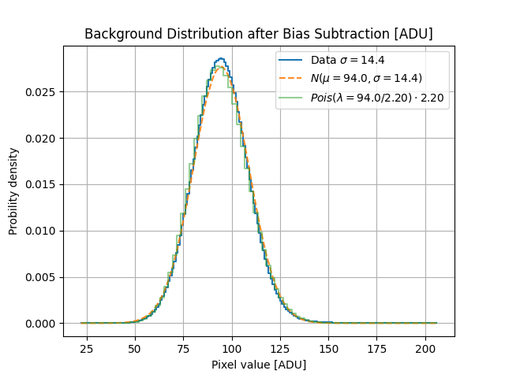

Note
Go to the end to download the full example code.
POGS Sensitivity#
Calibrating the gain of the POGS CCD sensor
import matplotlib.pyplot as plt
import numpy as np
import mirage.photo as mrp
fits_path = '/Users/liamrobinson/Library/CloudStorage/OneDrive-purdue.edu/pogs/misc/00161292.48859.fit'
header, img = mrp.load_fits(fits_path)
for k, v in header.items():
print(k, v)
img = img.flatten() - 1000
br = img[img < np.percentile(img, 99.8)]
f = 2.2
median = np.median(br)
print(f'Observed std in e- from the median {np.sqrt(median/f)}')
print(f'Observed std in e- from the std {(br/f).std()}')
vp = np.random.poisson(np.full(br.shape, median / f)) * f
vg = np.random.normal(loc=median, scale=np.full(br.shape, br.std()))
bins = np.arange(br.min(), br.max() + 1.1)
bins2 = np.arange(br.min(), br.max() + 1.1, f)
SIMPLE True
BITPIX 16
NAXIS 2
NAXIS1 4096
NAXIS2 4096
EXTEND True
COMMENT FITS (Flexible Image Transport System) format is defined in 'Astronomy
COMMENT and Astrophysics', volume 376, page 359; bibcode: 2001A&A...376..359H
BZERO 32768
BSCALE 1
SBUUID {d600fea9-a015-490d-92ba-05a15289251a}
EXPTIME 10.0
SWCREATE TheSkyX Version 10.5.0 Build 12304
COLORCCD 0
DISPINCR 1
PICTTYPE 1
IMAGETYP Light Frame
XORGSUBF 0
YORGSUBF 0
XBINNING 1
YBINNING 1
CCD-TEMP -16.5625
SET-TEMP -20.0
SITELAT +32 54 00.00
SITELONG +105 32 00.00
LST +03 44 18.26
OBSGEO-B 32.9
OBSGEO-L -105.5333333333
OBSGEO-H 2225.0
BTP 1
CENTAZ 24.7831932160211
CENTALT 61.5779934019759
AIRMASS 1.1370518125806
TELEHA -01 26 26.09
MOUNT Paramount ME II
TELTKRA 60.7947694
TELTKDEC -12.2182169
OBJCTRA 05 08 40.407
OBJCTDEC +57 09 47.31
OBJECT 48859
INSTRUME FLI Camera Plugin 2.0
XPIXSZ 9.0
YPIXSZ 9.0
READOUTM 8 MHz
CDS 8 MHz
FILTER Slot 0/Slot 0
DATE-OBS 2023-12-28T04:20:53.421
LOCALTIM 12/27/2023 09:20:53.420 PM STD
HRZOSCAN 0
VRTOSCAN 0
XORG_VIS 0
YORG_VIS 0
WID_VIS 4096
HT_VIS 4096
RBIFLOOD 0
RBIFLUSH 0
RBI_BIN 0
EXT_TEMP 4.0
Observed std in e- from the median 6.536610186271836
Observed std in e- from the std 6.557742999508902
Plotting the distributions in ADU
h1 = plt.hist(br, bins, density=True)[0]
h2 = plt.hist(vp, bins2, density=True)[0]
h3 = plt.hist(vg, bins, density=True)[0]
plt.cla()
plt.step(bins[1:], h1, label=f'Data $\sigma={br.std():.1f}$')
plt.plot(
bins[1:],
h3,
label=f'$N(\mu={median:.1f}, \sigma={br.std():.1f})$',
alpha=0.9,
linestyle='--',
)
plt.step(
bins2[1:], h2, label=f'$Pois(\lambda={median:.1f}/{f:.2f})\cdot {f:.2f}$', alpha=0.5
)
plt.xlabel('Pixel value [ADU]')
plt.ylabel('Probility density')
plt.title('Background Distribution after Bias Subtraction [ADU]')
plt.legend()
plt.grid()
plt.show()

# Plotting the distributions in ADU h1 = plt.hist(br, bins, density=True)[0] h2 = plt.hist(vp, bins2, density=True)[0] h3 = plt.hist(vg, bins, density=True)[0] plt.cla() plt.step(bins[1:], h1, label=’data’) plt.plot(
bins[1:], h3, label=f’$N(mu={median:.1f}, sigma={br.std():.1f})$’, alpha=0.9, linestyle=’–‘,
) plt.step(
bins2[1:], h2, label=f’$Pois(lambda={median:.1f}/{f:.2f})cdot {f:.2f}$’, alpha=0.5
) plt.xlabel(‘Pixel value [ADU]’) plt.ylabel(‘Probility density’) plt.title(‘Background Distribution after Bias Subtraction [e-]’) plt.legend() plt.grid() plt.show()
Total running time of the script: (0 minutes 3.942 seconds)